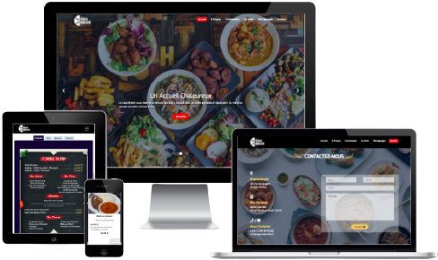
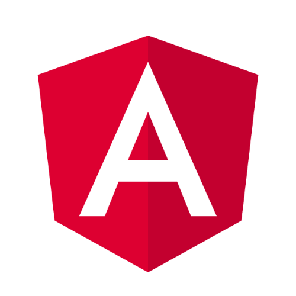
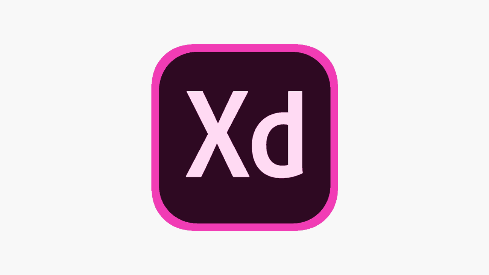

<div class="casa">
    <div class="content">


        <div class="description">
            
            <span class="description-title">Description</span>
            <span><strong>Le CASABREIZH</strong> est un restaurant situé dans la ville de Rennes. Il propose des spécialités africaines et des plats bretons. </span>
            <span>Le restaurant possèdait déjà un site web. Je l'ai découvert en ligne et j'ai très vite remarqué qu'il avait certains défauts.</span>
            <span>Il était vieux de plus de 10 ans et ne répondait plus aux réalités et exigences des sites web actuels en matière de design et expériences utilisateurs</span>
            <span>Après un premier travail personnel sur les interfaces utilisateurs, j'ai rencontré le propriétaire et je lui ai présenté le résultat de mon travail qu'il a très bien accueilli et m'a confié des difficultés avec son ancien site web. Il lui était impossible de mettre à jour ses menus lui-même ou indiquer aux utilisateurs l'indisponibilité ou non des plats. Il devait toujours faire appel au développeur pour toute modification de son menu si bien qu'il ne le mettait plus à jour. </span>
            <span>Après moultes échanges il m'a confié le projet.</span>
            <span>Les exigences de ce projet était les suivantes :</span>

            <ul>
                <li>permettre aux utilisateurs de consulter les menus, plats, desserts, boissons proposés par le restaurant</li>
                <li>créer une interface administrateur sécurisée, accessible via login et mot de passe et qui permettra de gérer les plats ( mettre à jour et indiquer l'indisponibité)</li>
                <li>optimiser le référencement SEO</li>
                <li>intégrer les avis utilisateurs des clients du restaurant via l'api de google</li>
                <li>rediriger les clients vers les comptes Uber Eat et Deliveroo du restaurant pour des livraisons à domicile</li>
                <li>terminer le développement du site web et le mettre en ligne</li>
            </ul>

            <button (click)="goOnElitesVoyagesWebsite()">Site web en cours de développement</button>

        </div> 

        <div class="technos-bloc">
            <span class="title">Technologies utilisées</span>


            <div class="technos">
                <div class="techno">
                    
                    <span>Angular 12</span>
                </div>
                <div class="techno">
                    
                    <span>Node js</span>
                </div>
                <div class="techno">
                    
                    <span>Express js</span>
                </div>
                <div class="techno">
                    
                    <span>Mongo DB</span>
                </div>
            
                <div class="techno">
                    
                    <span>OVH</span>
                </div>

                <div class="techno">
                    
                    <span>JSON Web Token</span>
                </div>

                <div class="techno">
                    
                    <span>Adobe XD</span>
                </div>

            </div>
        </div>
    </div>

</div>
